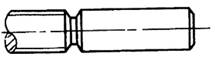

注 意 事 项
图 例
说 明
改 进 前
改 进 后
设计基面与工艺基面尽可能一致
镗杆支承吊架装在箱体上平面时，尺寸H要求严格，若改到下平面，与安装基面一致，H可为自由尺寸
不规则外形应设置工艺凸台（此凸台尽可能布置在装夹压力的作用线上）
锥形零件应作出装夹工艺面
车床小刀架作出工艺凸台，以便加工下部燕尾导轨面
为加工立柱导轨面，在斜面上设置工艺凸台
大件、沉重刮研件和长轴，应考虑工艺吊装位置

大件、沉重刮研件设置吊装凸耳（或专设吊装孔、吊装螺孔等），以便于加工、刮研、吊运、装配和维修

长轴一端设置吊挂螺孔或吊挂环，以便于吊运、热处理和保管